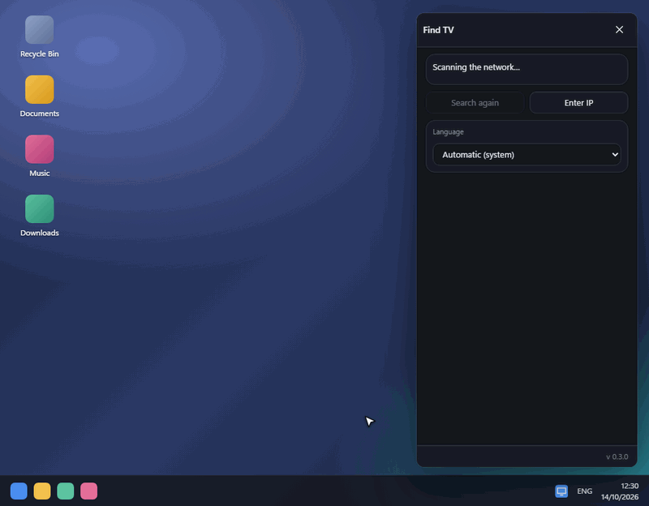
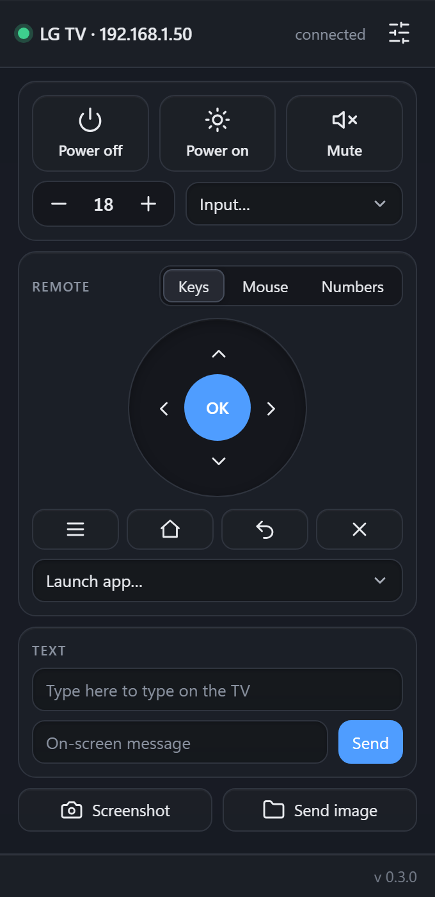
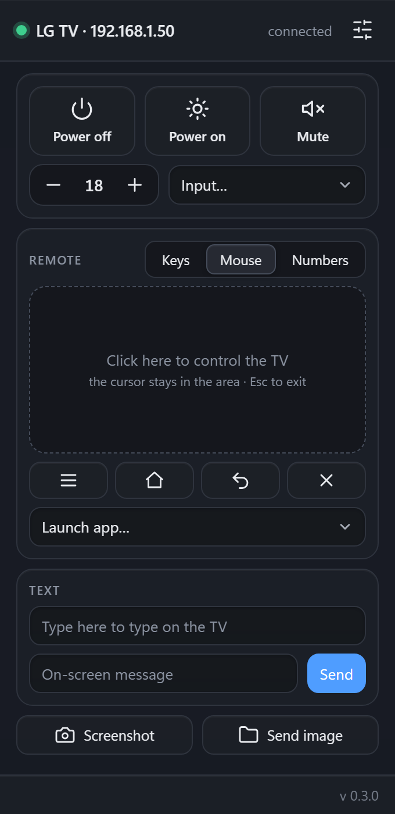
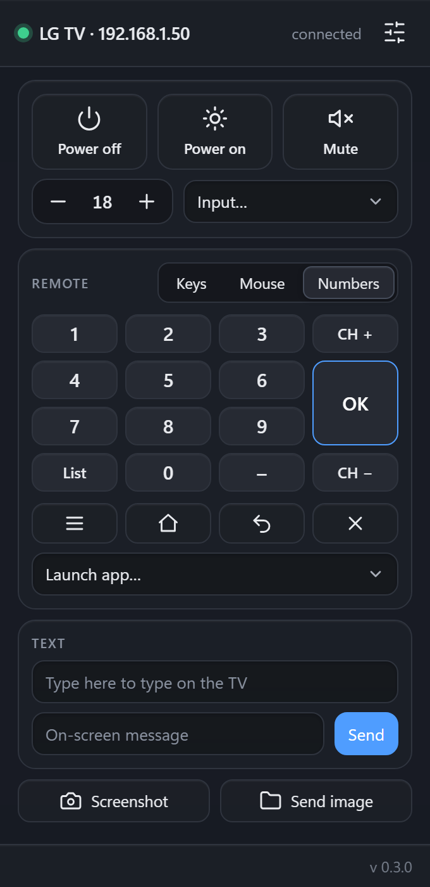
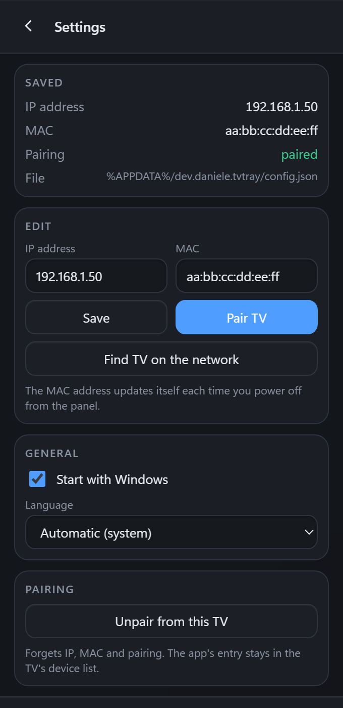

LG TV remote for the Windows system tray
A small free app that sits next to the clock and controls your LG webOS TV over your home network. No LG account, no Developer Mode, nothing to install on the TV.

Everything you reach for the remote for
One click on the tray icon opens a compact panel. It works over the TV's local control protocol, so it is fast and nothing leaves your network.
Power and Wake-on-LAN
Turn the TV off and back on from the PC. The MAC address is detected for you.
Volume, inputs, apps
Volume and mute, switch HDMI inputs and launch installed apps from a list.
Keys, mouse and number pad
Directional pad, a trackpad for the TV pointer, and digits to pick a channel by number.
Type with your keyboard
Type into search boxes and login fields on the TV with the PC keyboard, paste included.
Screenshot and images
Save what the TV shows to a file, or send a photo from the PC to the TV's screen.
On-screen messages
Pop a short notification onto the TV, handy for a quick note to the room.
A look at the panel
Dark, compact and fixed-size. The IP and MAC addresses in these pictures are placeholders.




Install in three steps
The TV and the PC must be on the same network, and the TV switched on.
Download and run
Get the installer and run it. It installs for your user only, so no administrator rights are needed.
Pick your TV
TV Tray scans the network and lists the TVs it finds. Click yours: the TV shows a pairing request.
Accept on the TV
Accept the request with the remote. From then on, one click on the tray icon opens the panel.
Good to know
Windows shows a SmartScreen warning
The installer is not code-signed yet, so Windows warns about an unknown publisher. Choose “More info”, then “Run anyway”. You can check the download against the SHA-256 shown below.
Is it safe? What does it store?
The app talks only to your TV on the local network. The pairing key is encrypted with Windows data protection and valid only for your user; no key is in the code. It is open source, so you can read exactly what it does.
Which TVs are supported?
LG TVs running webOS. It has been tested on a webOS 25 TV; other models and versions are not verified.
My TV is not found
Make sure the TV is on and on the same network, then use “Search again”. You can also enter its IP address by hand in Settings.